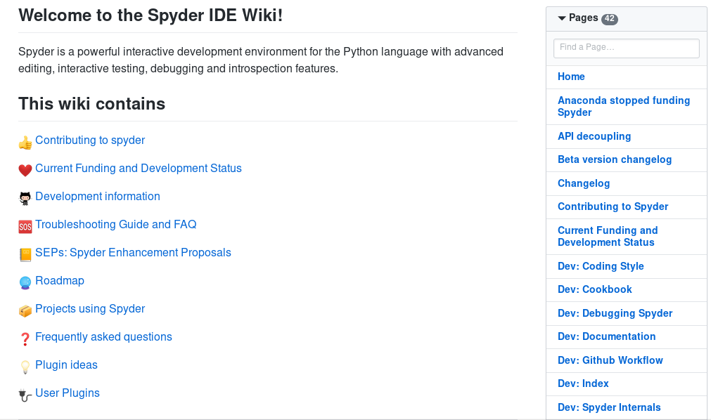

Desenvolvimento Aberto

Fluxo de trabalho distribuído e Comunidades de Software
Versão 2023/2 - Igor Montagner (igorsm1@insper.edu.br)
Ordem das apresentações
- VSCode
- Blender
- KDENlive
- NeoVim
10 minutos cada uma
Atividade: Explorando o entorno de um projeto

"metadata": {
"filename": "nome do arquivo",
"group": ["login1", "login2"]
}
-
No
groupincluir os outros membros do grupo somente -
Um membro da equipe deve fazer um PR para o projeto incluindo o arquivo da apresentação. O mesmo deve ser colocado na pasta
apresentacoes/2023
Desenvolvimento Aberto

Documentação de software
Versão 2023/2 - Igor Montagner (igorsm1@insper.edu.br)
Desenvolvimento Aberto
(A ausência de d)ocumentação de software
Versão 2023/2 - Igor Montagner (igorsm1@insper.edu.br)
Documentação de software
Documentação de usuário:
Documentação de desenvolvimento:
Documentação de software
Documentação de usuário:
- Instalação
- Funcionalidades
- Onde obter ajuda
Documentação de software
Documentação de desenvolvimento:
- Como compilar (dependências, ferramentas usadas, etc)
- Como testar (dependências, ferramentas usadas, etc)
- Estilo de código e outras orientações relacionadas
- Organização do código e arquitetura da aplicação
Documentação de software
Às vezes as coisas se confundem! O que vocês colocariam na documentação de usuário do Python?
E na de desenvolvedor?
Exemplo: Spyder

Exemplo: Spyder

https://github.com/spyder-ide/spyder/wiki
Sistemas de documentação

Sistemas de documentação

Sistemas de documentação (hospedagem)

Atividade
Vocês receberão um zip com o código de um software e zero instruções. Vocês deverão:
- Aprender como rodar o software
- Documentar os passos que vocês seguiram para fazê-lo
- Fazer uma análise crítica do projeto com relação a
- Arquitetura
- Qualidade do código
- Segurança da solução
Objetivos desta atividade
- Entender na prática a necessidade de documentação;
- Identificar quais são as dependências de um software. Isto inclui bibliotecas/frameworks usados e serviços aos quais esse software se conecta.
- Rodar sua própria versão de um software de terceiros
Não são objetivos desta atividade
- Mostrar nenhum tipo de boa prática de programação
- Modificar o software analisado
- Criticar o desenvolvedor que trabalhou antes no projeto
Atividade prática: Projeto não documentado

Objetivo: entender como rodar um código sem instruções.
Validação: apresentação do sistema funcionando.
Grupos de até 3 pessoas
Tempo restante de hoje + hora inicial da próxima aula. Usem handout como guia
Desenvolvimento Aberto